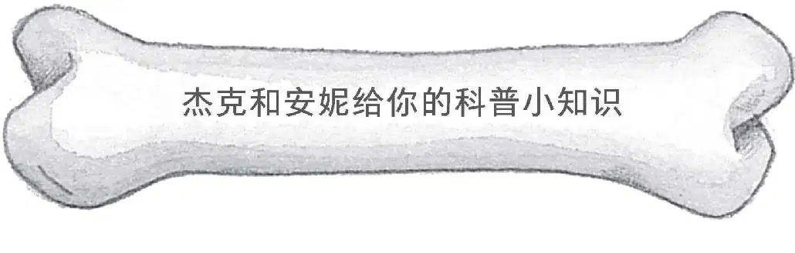
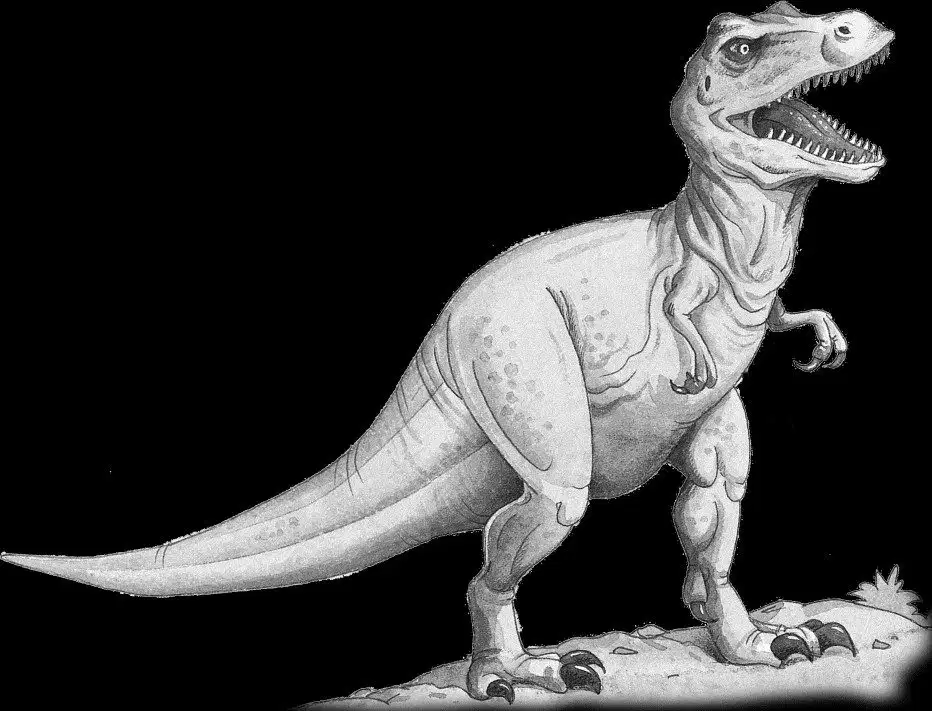
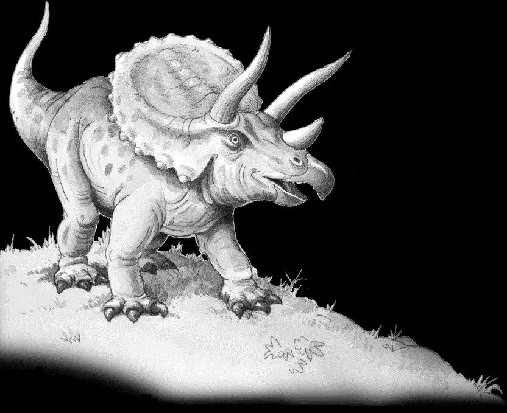
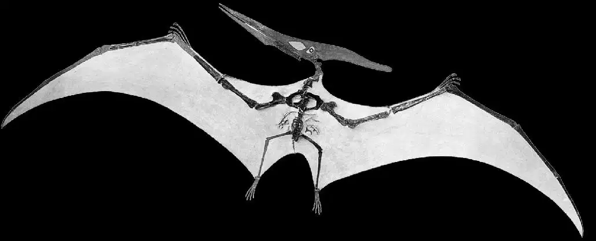

1.恐龙都是爬行动物，居住在陆地上。它们的身上几乎都覆有鳞片，没有毛发。
2.恐龙分为肉食性恐龙和植食性恐龙，肉食性恐龙吃肉，植食性恐龙吃植物。肉食性恐龙比植食性恐龙出现得早，它们既聪明又跑得快。但最大的恐龙却不是肉食性恐龙，而是植食性恐龙。
3.雷克斯霸王龙是最有名的一种肉食性恐龙。它的牙齿长达15厘米，十分锋利，脑袋和浴缸一样大。雷克斯霸王龙吃下去的一口食物够人类一家人吃一周！
雷克斯霸王龙的后肢很大，且强健有力，但是它的前肢却十分短小，连自己的嘴巴都碰不到。

4.三角龙的脸长得就像恐怖面具，它的嘴和鹦鹉的嘴类似，头上有三只角。古生物学家认为，这些角的主要作用是抵御敌人，但有时雄性三角龙会用它来进行“抵角大战”，争夺雌性三角龙。

5.无齿翼龙和恐龙生于同一年代，它的喙很长，脑袋后面还有一个长长的骨质冠饰。当它从天上猛冲下来捕鱼时，它的冠饰能够保持身体的平衡。
